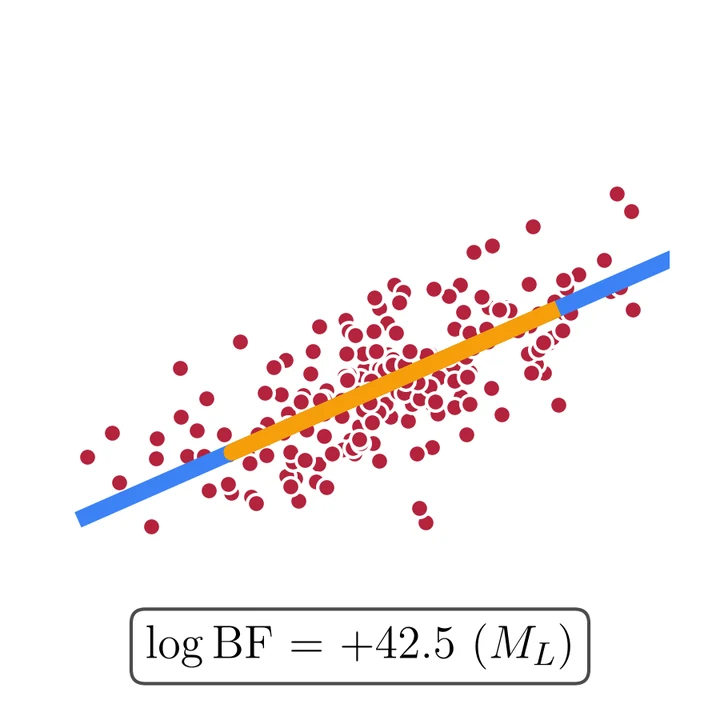
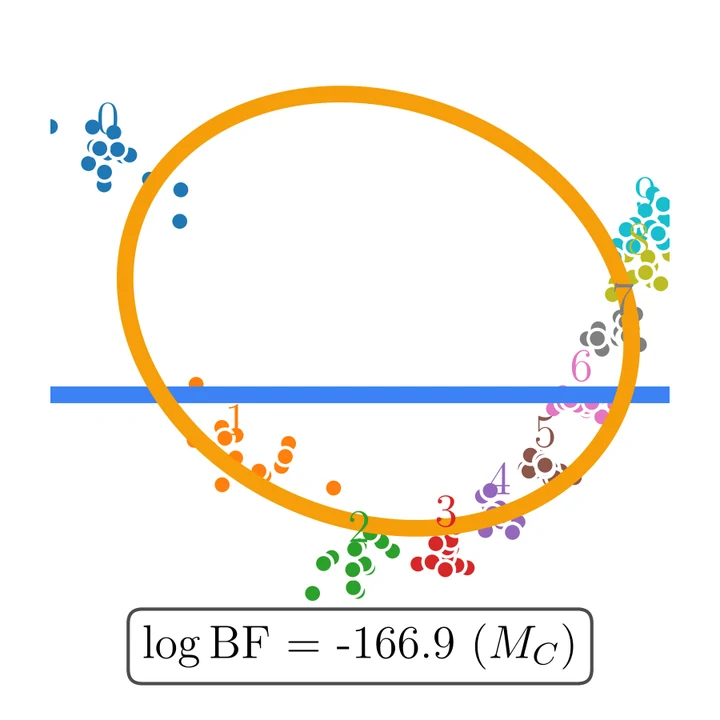
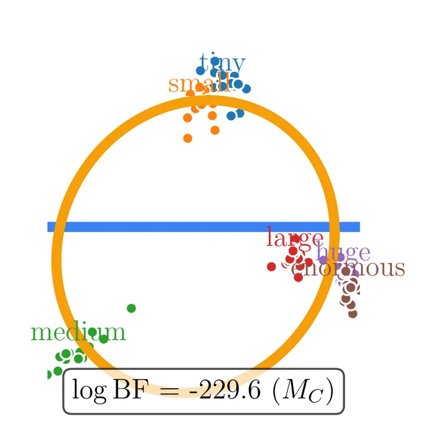
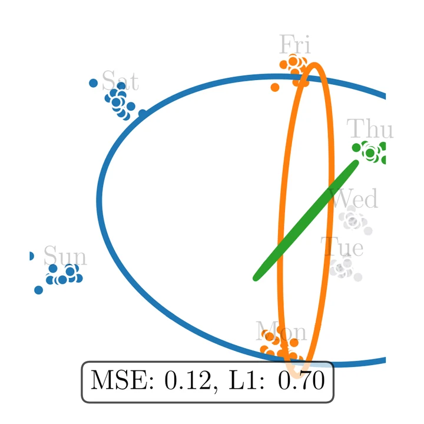
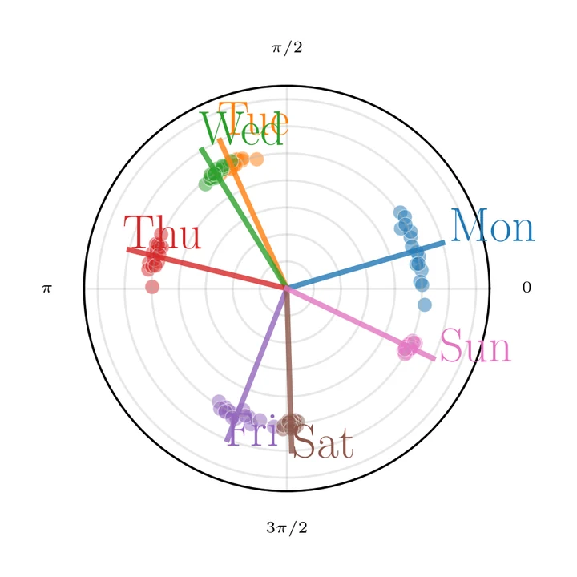

Research · LLM interpretability
Quantifying the Geometry of Concepts: A Two-Stage Bayesian Framework for LLM Interpretability
TODO: affiliation & venue


Abstract
TODOThe paper’s abstract is not in the repository. The summary below is drawn from the README and code; replace it with the paper abstract.
Concepts inside large language models are often assumed to be linear directions, yet some concepts, such as days of the week or months of the year, are periodic and may live on a circle. This project provides tools to systematically evaluate and extract that geometric structure. In the first stage, Bayesian Model Comparison (BMC) fits a linear and a circular latent-variable model to a concept’s activations with EM and compares them by their Laplace-approximated marginal likelihoods, giving a Bayes factor that quantifies which geometry the data supports. In the second stage, a Sparse Circular Autoencoder (SCAE) generalises the standard sparse autoencoder so that each dictionary atom is a two-dimensional circle rather than a single direction, letting periodic features be extracted together with an angle. The framework is validated on synthetic linear and circular data and applied to residual-stream activations of Llama-3-8B-Instruct.
Key idea
Ask the data which shape it is, then extract it in that shape
Bayesian Model Comparison
Two generative models compete to explain the same activations: a linear model \(M_L\), where a scalar latent moves along a line, and a circular model \(M_C\), where an angle moves around an ellipse. The log Bayes factor \(\log \mathrm{BF} = \log p(\mathbf X\mid M_L) - \log p(\mathbf X\mid M_C)\) trades fit against complexity automatically: positive values favour linear, negative values favour circular.
Sparse Circular Autoencoders
A standard SAE explains each activation as a sparse sum of directions. The SCAE replaces each direction with a 2-D plane: the encoder projects onto each plane, a ReLU on the projection’s norm gives a sparse magnitude, and its direction gives an angle \(\theta_k\). Periodic concepts can then be read off as positions on a learned circle.
Method
Two generative models, one Bayes factor
Given \(N\) activation vectors \(\mathbf x_n \in \mathbb R^m\) for one concept (after template-mean subtraction and PCA), both models share an offset \(\boldsymbol\mu\) and isotropic noise \(\sigma^2\), and differ only in their one-dimensional latent manifold.
Linear model \(M_L\)
Integrating out \(z_n\) gives a closed-form likelihood, evaluated in \(\mathcal O(Nm)\) with the matrix determinant lemma and the Woodbury identity:
Circular model \(M_C\)
with \(\mathbf W \in \mathbb R^{m\times 2}\). The angle is integrated numerically on a uniform grid of \(K = 200\) points:
Fitting with EM
Both models are fitted by Expectation–Maximisation, initialised from PCA. For \(M_L\) the posterior over \(z_n\) is Gaussian; for \(M_C\) the E-step computes grid posteriors \(p(z^{(k)}\mid\mathbf x_n)\) and the sufficient statistics \(\mathbb E[\boldsymbol\phi]\) and \(\mathbb E[\boldsymbol\phi\boldsymbol\phi^\top]\), after which the M-step updates are closed form:
Laplace-approximated evidence and the Bayes factor
Each model’s marginal likelihood is approximated around the EM solution \(\hat{\boldsymbol\theta}\), with weakly informative Gaussian priors on \(\boldsymbol\mu\), \(\mathbf w\) (or \(\mathbf W\)) and \(\log\sigma^2\), and a diagonal Hessian \(\mathbf H\) of the negative log posterior computed by central finite differences:
The \(-\tfrac12\log\det\mathbf H\) term is the Occam penalty: the circular model has \(m\) more parameters and must earn them through a better fit. A BIC approximation, \(\log p(\mathbf X\mid\hat{\boldsymbol\theta}) - \tfrac{k}{2}\log N\), is also implemented.
Sparse Circular Autoencoder
For a baseline SAE with \(K\) features, \(\mathbf a = \mathrm{ReLU}\big(\mathbf W_{\text{enc}}(\mathbf x - \boldsymbol\mu) + \mathbf b\big)\) and \(\hat{\mathbf x} = \boldsymbol\mu + \mathbf W_{\text{dec}}\mathbf a\). In the SCAE, each feature \(k\) owns a decoder plane \(\mathbf W_k \in \mathbb R^{m\times 2}\), tied to its encoder:
Each active SCAE feature therefore traces a loop \(\boldsymbol\mu + a_k \mathbf W_k [\cos\theta, \sin\theta]^\top\) in activation space, and \(\theta_k\) reads off where on that loop an input lies. Both autoencoders are initialised from PCA directions (the SCAE takes consecutive pairs of principal components as its initial planes).
Experimental setup
Synthetic validation, then Llama 3
- Model
- Meta-Llama-3-8B-Instruct, residual stream at layer 16, taken at the last sub-token of the target word.
- Concepts
- days (7 labels × 15 templates), months (12 × 15), numbers 0–9 (10 × 15), and the ordinal controls sentiment (7 × 10, “terrible” → “excellent”) and size (6 × 15, “tiny” → “enormous”).
- Preprocessing
- Per-template mean subtraction to remove template common-mode variance, then PCA to \(m = 20\) dimensions.
- Synthetic data
- \(N = 200\) samples from the linear and circular generative models with \(\sigma^2 = 0.3\), in \(m = 3\) and \(m = 20\) dimensions (seed 7).
- Autoencoders
- \(K = 10\) features, 5000 epochs, batch size 64, learning rate \(3\times10^{-3}\), \(\lambda = 0.15\).
- Compute
- BMC fitting takes about a minute on a CPU; SAE/SCAE training about two minutes per concept on a single GPU.
Results
Bayes factors
Log Bayes factors from the fitted models in the repository’s figures/bmc/ outputs. Negative values favour the circular model.
| Dataset | \(m\) | log BF | Favoured |
|---|---|---|---|
| Synthetic (ground truth known) | |||
| Circular | 3 | −155.4 | \(M_C\) circular |
| Circular | 20 | −405.2 | \(M_C\) circular |
| Linear | 3 | +42.5 | \(M_L\) linear |
| Linear | 20 | +37.0 | \(M_L\) linear |
| Llama-3-8B-Instruct · layer 16 | |||
| Days of the week | 20 | −222.0 | \(M_C\) circular |
| Months of the year | 20 | −222.4 | \(M_C\) circular |
| Numbers 0–9 | 20 | −166.9 | \(M_C\) circular |
| Sentiment (control) | 20 | −185.1 | \(M_C\) circular |
| Size (control) | 20 | −229.6 | \(M_C\) circular |
Synthetic data: correct model recovered
On all four synthetic datasets the Bayes factor picks the generating model: circular data is strongly favoured as circular, and linear data as linear, in both 3 and 20 dimensions.
Llama 3: every concept favours a circle
Days, months and numbers all strongly favour \(M_C\). So do the two ordinal controls, sentiment and size, which the configuration lists as expected to be linear. With these settings, a negative Bayes factor alone therefore does not separate periodic from ordinal concepts.
Fitted manifolds
Activations projected to the first two principal components, with the fitted linear (blue) and circular (orange) manifolds.







Results · Stage 2
Extracting periodic features with SCAEs
Choose a concept to compare the standard SAE’s directions with the SCAE’s learned circles, and to see the angle the SCAE assigns to each label.



Angles follow cyclic order
For days, the SCAE angle increases monotonically from Monday to Sunday around the circle. For months, angles increase from January to July, wrap past \(2\pi\) at August, and increase again through December, preserving the cyclic order up to the wrap point (January and February overlap).
Reconstruction vs. sparsity
In every run shown the SCAE has higher reconstruction MSE and higher L1 than the standard SAE with the same \(K\) and \(\lambda\) (table below). Its benefit is structural: each feature carries an angle as well as a magnitude, so a periodic concept can be read as a position on a learned circle.
| Dataset | SAE MSE | SAE L1 | SCAE MSE | SCAE L1 |
|---|---|---|---|---|
| Synthetic circular, \(m=3\) | 0.01 | 0.29 | 0.12 | 1.49 |
| Synthetic circular, \(m=20\) | 0.12 | 0.33 | 0.35 | 0.53 |
| Synthetic linear, \(m=3\) | 0.08 | 0.20 | 0.10 | 1.31 |
| Synthetic linear, \(m=20\) | 0.13 | 0.25 | 0.32 | 0.50 |
| Days | 0.05 | 0.23 | 0.12 | 0.70 |
| Months | 0.06 | 0.14 | 0.14 | 0.57 |
| Numbers | 0.09 | 0.18 | 0.13 | 0.95 |
| Sentiment | 0.12 | 0.41 | 0.19 | 1.60 |
| Size | 0.16 | 0.40 | 0.19 | 1.60 |
Reproduce
Code
The pipeline lives in scripts/: extract activations, generate synthetic data, preprocess, run BMC, then train the SAE and SCAE. All hyperparameters are in scripts/config.py.
Running the Llama 3 experiments requires access to the Llama-3-8B-Instruct weights on Hugging Face under the Meta Llama 3 Community License.
git clone https://github.com/thedylone/bayesian-llm-geometry.git
cd bayesian-llm-geometry
pip install -r requirements.txt && pip install -e .
python scripts/04_run_bmc.py # Stage 1
python scripts/05_plot_bmc.py
python scripts/06_train_sae.py # Stage 2
python scripts/07_plot_sae.pyCitation
BibTeX
TODOVenue and year are not recorded in the repository; update the entry once the paper is public.
@misc{chua_geometry_of_concepts,
title = {Quantifying the Geometry of Concepts: A Two-Stage
Bayesian Framework for LLM Interpretability},
author = {Chua, Dylan},
howpublished = {\url{https://github.com/thedylone/bayesian-llm-geometry}},
note = {TODO: venue and year}
}